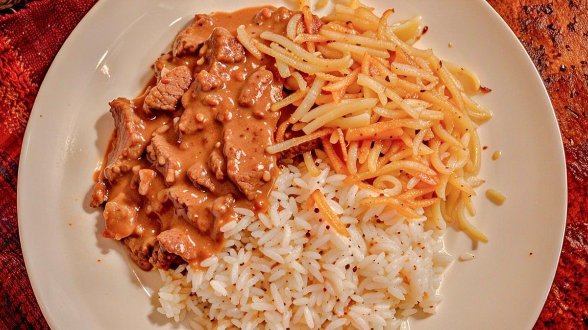

Strogonoff de Carne
Receita e Modo de Preparo

O strogonoff de carne é uma receita clássica e muito querida no Brasil. Cremoso, saboroso e fácil de preparar, é perfeito para um almoço rápido ou um jantar especial em família.
Feito com tiras de carne macia, molho de tomate e creme de leite, esse prato combina praticidade e sabor irresistível!
Informações:
Tempo de Preparo: 30min | Dificuldade: Fácil | Custo: Médio
Utensílios: Panela, Colher de Pau, Tábua de Corte, Faca
Ingredientes (4 Porções):
- 500g de carne (filé mignon, alcatra ou contra-filé) cortada em tiras
- 1 cebola picada
- 2 colheres (sopa) de óleo ou manteiga
- 1 dente de alho picado
- 2 colheres (sopa) de ketchup
- 1 colher (sopa) de mostarda
- 200g de creme de leite
- Sal e pimenta-do-reino a gosto
- Champignon fatiado (opcional)
- Arroz branco e batata palha para acompanhar
Modo de Preparo:
- Em uma panela, aqueça o óleo e doure a cebola e o alho.
- Adicione a carne e refogue até ficar dourada por igual.
- Acrescente o ketchup, a mostarda e misture bem.
- Adicione o champignon, se desejar, e tempere com sal e pimenta.
- Desligue o fogo, incorpore o creme de leite e mexa até ficar homogêneo.
- Sirva com arroz branco e batata palha.